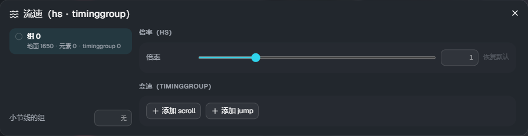

流速（Scroll）
如果什么都不设置，地面音符会按照谱面的 scroll（Composer 中 effect 的 scroll / jump）流动。 「流速」可以按音符组改变这一点。判定的时间不会改变（只改变看到的位置）。
音符组用 Composer 的音符组功能设置。没有设置组的音符属于组 0。
打开方式
点击时间轴工具栏上的 「Scroll」。

- 左侧：组的列表。显示地面音符・元素・timinggroup 的数量。时间轴上的地面音符会按组显示颜色
- 右侧：选中组的设置
- 小节线的组：让小节线使用哪个组的流速（留空则按谱面的 scroll）
倍率（hs）
为该组的流动速度乘上整首歌固定的倍率。范围 0.1〜10，默认为 1（越大越快）。点击「恢复默认」恢复为 1。
变速（timinggroup）
只属于该组的速度变化。
- 添加 scroll：从该时间起把速度改为「值」。填写「变化长度」后，会在这段长度（拍）内按缓动（ease）平滑地改变；留空则立即改变
- 添加 jump：在该时间向前跳过「值」（ms）
- 时间以「小节:拍+分数」（例：
4:2+1/4）输入
与倍率（hs）一起使用时，变速的速度还会再乘上倍率。
空中元素・描线的组
空中元素（AirTap・AirSlide・AirLift）和描线（Trace・Guide）如果不指定，会按照谱面的 scroll 流动。 在属性的 组 中填写编号后，就会使用与该组相同的流速。